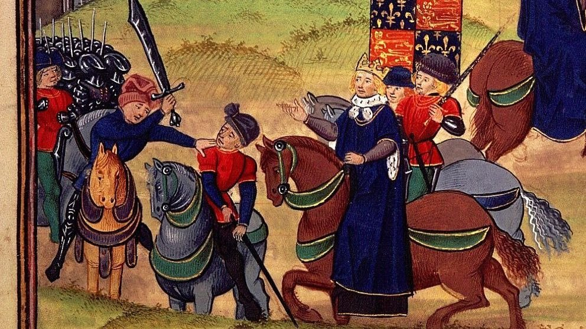
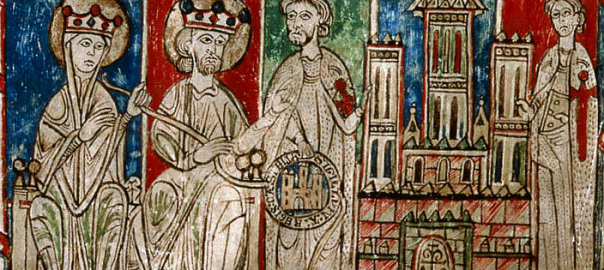

Con la caída de Roma, las tierras fueron ocupadas por los pueblos visigodos. La posterior llegada de los musulmanes y la posterior reconquista mucho tiene que ver con la actual composición de la Península ibérica. En la zona montañosa de la actual Asturias se formó un pequeño reino cristiano que se oponía a la presencia islámica en la Península. Se proclamaban herederos de los últimos reyes visigodos, que a su vez habían sido profundamente romanizados
Esta resistencia de herencia visigodo-romana y apoyada en el cristianismo, fue haciéndose cada vez más fuerte y expandiéndose hacia el Sur, pasando su capital a la ciudad de León y creando así el Reino de León.
Para favorecer la repoblación de las nuevas tierras reconquistadas, se concedían por parte de los monarcas Fueros o Cartas de Repoblación. Ejemplo temprano de ese fenómeno es la Carta Puebla de Brañosera que precipita el fenómeno foramontano.
El fenómeno de la reconquista comienza con progresivos avances y retrocesos territoriales hasta que se fija en la línea del Duero la división con el poder islámico peninsular. El Rey de León favorece el repoblamiento de Valladolid y Zamora.
Simultáneamente, un condado de este reino cristiano de León, empieza a adquirir autonomía y a expandirse. Se trata del primigenio Condado de Castilla, que crecerá hasta convertirse en un verdadero Reino de gran pujanza de entre los reinos cristianos peninsulares. Fernán González unifica todos los condados de la Marca Oriental del Reino de León, denominándolo Castilla, nombre que recoge de la Castella Vetula origen de la marca cuyo uso está por primera vez documentado en Taranco de Mena. En este territorio la base jurídica era el derecho consuetudinario de las fazañas aplicado por los Jueces de Castilla. Los Cartularios de Valpuesta recogen las primeras pinceladas del romance castellano, lengua romance influenciada por la vecindad con el euskera.
León y Castilla se siguieron expandiendo hacia el Sur, incluso más allá del Duero. En esos territorios la organización territorial será a partir de la Comunidad de Villa y Tierra. Es lo que se conoce como la Extremadura Castellana.
La Edad Media, Medievo o Medioevo es el período histórico de la civilización occidental comprendido entre los siglos v y xv. Convencionalmente, su inicio se sitúa en el año 476 con la caída del Imperio romano de Occidente y su fin en 1492 con el descubrimiento de América,o en 1453 con la caída del Imperio bizantino, fecha que tiene la singularidad de coincidir con la invención de la imprenta —publicación de la Biblia de Gutenberg— y con el fin de la guerra de los Cien Años.
A día de hoy, los historiadores del período prefieren matizar esta ruptura entre Antigüedad y Edad Media de manera que entre los siglos iii y viii se suele hablar de Antigüedad Tardía, que habría sido una gran etapa de transición en todos los ámbitos: en lo económico, para la sustitución del modo de producción esclavista por el modo de producción feudal; en lo social, para la desaparición del concepto de ciudadanía romana y la definición de los estamentos medievales, en lo político para la descomposición de las estructuras centralizadas del Imperio romano que dio paso a una dispersión del poder; y en lo ideológico y cultural para la absorción y sustitución de la cultura clásica por las teocéntricas culturas cristiana o islámica (cada una en su espacio).
Suele dividirse en dos grandes períodos: Temprana o Alta Edad Media (ss. v-x, sin una clara diferenciación con la Antigüedad Tardía); y Baja Edad Media (ss. xi-xv), que a su vez puede dividirse en un periodo de plenitud, la Plena Edad Media (ss. xi-xiii), y los dos últimos siglos que presenciaron la crisis del siglo xiv.
El concepto de Edad Media nació como la segunda edad de la división tradicional del tiempo histórico debida a Cristóbal Cellarius (Historia Medii Aevi a temporibus Constantini Magni ad Constaninopolim a Turcis captam deducta, Jena, 1688)quien la consideraba un tiempo intermedio, sin apenas valor por sí mismo, entre la Edad Antigua identificada con el arte y la cultura de la civilización grecorromana de la Antigüedad clásica y la renovación cultural de la Edad Moderna —en la que él se sitúa— que comienza con el Renacimiento y el Humanismo. La popularización de este esquema ha perpetuado un preconcepto erróneo: el de considerar a la Edad Media como una época oscura, sumida en el retroceso intelectual y cultural, y un aletargamiento social y económico secular (que a su vez se asocia con el feudalismo en sus rasgos más oscurantistas, tal como se definió por los revolucionarios que combatieron el Antiguo Régimen). Sería un periodo dominado por el aislamiento, la ignorancia, la teocracia, la superstición y el miedo milenarista alimentado por la inseguridad endémica, la violencia y la brutalidad de guerras e invasiones constantes y epidemias apocalípticas.
Sin embargo, en este largo período de mil años hubo todo tipo de hechos y procesos muy diferentes entre sí, diferenciados temporal y geográficamente, respondiendo tanto a influencias mutuas con otras civilizaciones y espacios como a dinámicas internas. Muchos de ellos tuvieron una gran proyección hacia el futuro, entre otros los que sentaron las bases del desarrollo de la posterior expansión europea, y el desarrollo de los agentes sociales que desarrollaron una sociedad estamental de base predominantemente rural pero que presenció el nacimiento de una incipiente vida urbana y una burguesía que con el tiempo desarrollarán el capitalismo.Lejos de ser una época inmovilista, la Edad Media, que había comenzado con migraciones de pueblos enteros, y continuado con grandes procesos repobladores (Repoblación en la península ibérica, Ostsiedlung en Europa Oriental) vio cómo en sus últimos siglos los antiguos caminos (muchos de ellos vías romanas decaídas) se reparaban y modernizaban con airosos puentes, y se llenaban de toda clase de viajeros (guerreros, peregrinos, mercaderes, estudiantes, goliardos, etc.) encarnando la metáfora espiritual de la vida como un viaje
También surgieron en la Edad Media formas políticas nuevas, que van desde el califato islámico a los poderes universales de la cristiandad latina (Pontificado e Imperio) o el Imperio bizantino y los reinos eslavos integrados en la cristiandad oriental (aculturación y evangelización de Cirilo y Metodio); y en menor escala, todo tipo de ciudades estado, desde las pequeñas ciudades episcopales alemanas hasta repúblicas que mantuvieron imperios marítimos como Venecia; dejando en la mitad de la escala a la que tuvo mayor proyección futura: las monarquías feudales, que transformadas en monarquías autoritarias prefiguran el estado moderno.
En la Edad Media se popularizó la peregrinación por parte de la cristiandad a Santiago de Compostela. El Camino de Santiago trascurre a lo largo de la región, lo que cotribuyó a que la cultura europea viajara y se expandiera en la península. A día de hoy dicho Camino sigue siendo un reclamo turístico y cultural de primer orden.
La ciencia medieval no respondía a una metodología moderna, pero tampoco lo había hecho la de los autores clásicos, que se ocuparon de la naturaleza desde su propia perspectiva; y en ambas edades sin conexión con el mundo de las técnicas, que estaba relegado al trabajo manual de artesanos y campesinos, responsables de un lento pero constante progreso en las herramientas y procesos productivos. La diferenciación entre oficios viles y mecánicos y profesiones liberales vinculadas al estudio intelectual convivió con una teórica puesta en valor espiritual del trabajo en el entorno de los monasterios benedictinos, cuestión que no pasó de ser un ejercicio piadoso, sobrepasado por la mucho más trascendente valoración de la pobreza, determinada por la estructura económica y social y que se expresó en el pensamiento económico medieval.
Medievalismo es tanto la cualidad o carácter de medieval,como el interés por la época y los temas medievales y su estudio; y medievalista el especialista en estas materias.
El descrédito de la Edad Media fue una constante durante la Edad Moderna, en la que Humanismo, Renacimiento, Racionalismo, Clasicismo e Ilustración se afirman como reacciones contra ella, o más bien contra lo que entienden que significaba, o contra los rasgos de su propio presente que intentan descalificar como pervivencias medievales. No obstante desde fines del siglo XVI se producen interesantes recopilaciones de fuentes documentales medievales que buscan un método crítico para la ciencia histórica. El Romanticismo y el Nacionalismo del siglo XIX revalorizaron la Edad Media como parte de su programa estético y como reacción anti-académica (poesía y drama románticos, novela histórica, nacionalismo musical, ópera), además de como única posibilidad de encontrar base histórica a las emergentes naciones (pintura de historia, arquitectura historicista, sobre todo el neogótico —labor restauradora y recreadora de Eugène Viollet-le-Duc— y el neomudéjar). Los abusos románticos de la ambientación medieval (exotismo), produjeron ya a mediados del siglo xix la reacción del realismo.
Otro tipo de abusos son los que dan lugar a una abundante literatura pseudohistórica que llega hasta el presente, y que ha encontrado la fórmula del éxito mediático entremezclando temas esotéricos sacados de partes más o menos oscuras de la Edad Media (Archivo Secreto Vaticano, templarios, rosacruces, masones y el mismísimo Santo Grial).
Algunos de ellos se vincularon al nazismo, como el alemán Otto Rahn. Por otro lado, hay abundancia de otros tipos de producciones artísticas de ficción de diversa calidad y orientación inspiradas en la Edad Media (literatura, cine, cómic). También se han desarrollado en el siglo XX otros movimientos medievalistas: un medievalismo historiográfico serio, centrado en la renovación metodológica (fundamentalmente por la incorporación de la perspectiva económica y social aportada por el materialismo histórico y la Escuela de los Annales) y un medievalismo popular (espectáculos medievales, más o menos genuinos, como actualización del pasado en el que la comunidad se identifica, lo que se ha venido en llamar memoria histórica).
Estamos en la plena Edad Media y los cantares de gesta narran las grandes historias de los nobles cristianos que luchaban contra el enemigo musulmán. A pesar de ello, los reyes cristianos y musulmanes mantenían relaciones diplomáticas. Claro ejemplo es El Cid, paradigma del caballero medieval cristiano, que luchó tanto de la mano de los reyes cristianos como de los musulmanes.
En 1188 la Basílica de San Isidoro de León había sido sede de las primeras Cortes de la Historia de Europa con participación del Tercer Estado. El rey que las convocó fue Alfonso IX.
La base jurídica era el Derecho Romano, debido a lo cual los reyes cada vez querían más poder, a semejanza de los emperadores romanos. Este hecho se ve muy claramente ya en Las 7 Partidas de Alfonso X, que ya deja claro el monismo imperial que buscaba. El Rey no quería ser un primus inter pares, el Rey era la fuente del derecho.
Las bases de la unificación dinástica de los reinos de Castilla y León, separados tan solo siete décadas, se habían puesto en 1194. Alfonso VIII y Alfonso IX firmaron en Tordehumos el tratado por el que se pacificaba la zona de Tierra de Campos y se ponían las bases de una futura reunificación de los reinos, consolidada en 1230 con Fernando III, el Santo. Este acuerdo ha pasado a la historia como Tratado de Tordehumos.
Ya con Fernando III, Castilla y León se une bajo un mismo reino de manera definitiva y hasta nuestros días, y antes de él los reinos ya habían permanecido bajo el mismo mando durante algunas temporadas.
La reconquista siguió avanzando en esta pujante Corona de Castilla, y se culminó con la rendición del Reino Nazarí de Granada. En esta época, los reyes ya habían adquirido gran poder, estábamos en la época de las monarquías autoritarias.